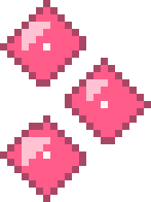
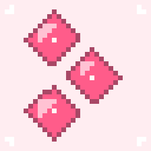

large · transparent

Not a new logo. The shipped mark derbis_logo.png is three diamonds on alpha; this
reads that alpha channel, crops it to the mark, resamples onto a 21×28 pixel grid and inlays
it with a rose outline, blush highlight and a cream catchlight. Same shape, coarser resolution,
the skin's colours.


alpha 0. The launcher
plate is a separate pink tile with its own rounded corners; the mark PNG stays plate-free.preview/pixel-logo/logo.png (transparent) and
logo.svg.preview/pixel-logo/icon.png and
icon.svg, plate included.preview/pixel-logo/generate.py — reads
the app's own derbis_logo.png. Standard library only.